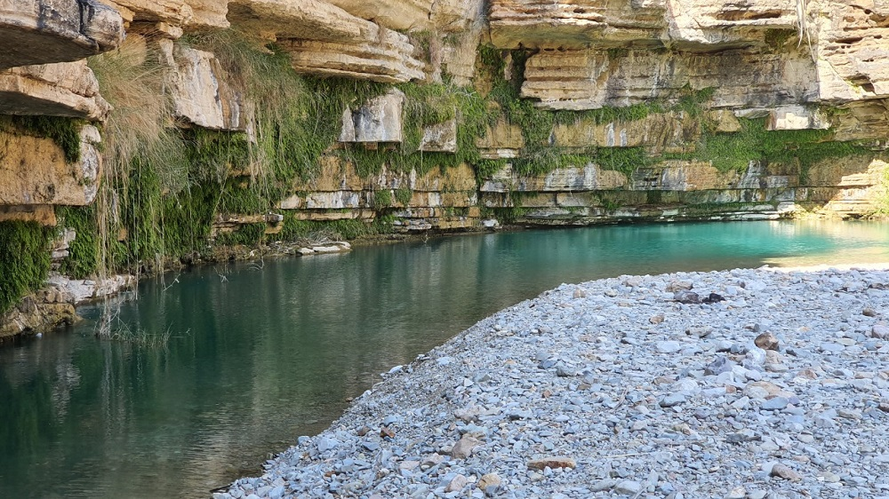

<div class="portfolio-single-load clearfix">
    <div class="custom-full-width-box">
        <div class="custom-container">
            <div class="custom-row align-items-center">
                <div class="custom-image-column">
                    
                </div>
                <div class="custom-text-column">
                    <h2 class="custom-heading">Khuzdar</h2>
                    <p class="custom-paragraph">
                        
                        Khuzdar, nestled along the Kolāchi River in the Pab Range, offers a glimpse into Balochistan's rich cultural heritage. As a market center for wool, Khuzdar boasts a bustling trade scene. Delight in traditional dishes such as Sajji and Namkeen Roast, showcasing the region's culinary prowess. Venture on a culinary journey through Balochistan's flavors, complemented by the town's picturesque orchards and historic charm.


                    </p>
                </div>
            </div>
        </div>
    </div><!-- .custom-full-width-box end -->

</div><!-- end single-project -->
